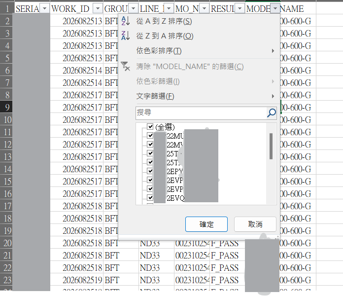
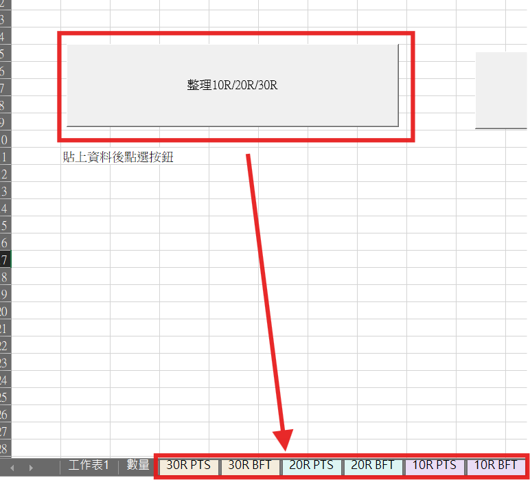
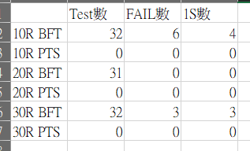

👉 將「繁瑣篩選 + 多重樞紐計算」轉化為「一鍵分類 ➔ 人工確認 ➔ 一鍵彙整」的高效防呆流程。



原本手動流程：人工比對料號清單 ➔ 手動篩選站點 ➔ 複製到 6 個分頁 ➔ 各別拉樞紐分析表計算 ➔ 耗時且容易漏選料號。
自動化巨集：標準化陣列規則篩選，2 步驟自動拆分並產出統計報表，流程縮短時間，降低人為失誤。
Sub FilterAndSplit_ByECG()
Dim ws As Worksheet
Dim rng As Range
Dim lastRow As Long, lastCol As Long
'======== 條件設定區 ========
Dim CondB As String, CondC As String
Dim SheetNameB As String, SheetNameC As String
Dim SheetNameD As String, SheetNameE As String
Dim SheetNameF As String, SheetNameG As String
CondB = "BFT"
CondC = "PTS"
SheetNameB = "10R BFT"
SheetNameC = "10R PTS"
SheetNameD = "20R BFT"
SheetNameE = "20R PTS"
SheetNameF = "30R BFT"
SheetNameG = "30R PTS"
'===========================
Set ws = ThisWorkbook.Sheets("工作表1")
Application.ScreenUpdating = False
Application.DisplayAlerts = False
lastRow = ws.Cells(ws.Rows.Count, "A").End(xlUp).Row
lastCol = ws.Cells(1, ws.Columns.Count).End(xlToLeft).Column
Set rng = ws.Range(ws.Cells(1, 1), ws.Cells(lastRow, lastCol))
'========== 共用：E欄排除特定規則工單 ==========
rng.AutoFilter Field:=5, Criteria1:="<>00234*"
'========== 料號陣列對應（機敏料號已去敏展示） ==========
' 10R 站點分類
Call FilterAndCopy(rng, Array("PART_10R_01", "PART_10R_02", "PART_10R_03"), CondB, SheetNameB)
Call FilterAndCopy(rng, Array("PART_10R_01", "PART_10R_02", "PART_10R_03"), CondC, SheetNameC)
' 20R 站點分類
Call FilterAndCopy(rng, Array("PART_20R_01", "PART_20R_02", "PART_20R_03"), CondB, SheetNameD)
Call FilterAndCopy(rng, Array("PART_20R_01", "PART_20R_02", "PART_20R_03"), CondC, SheetNameE)
' 30R 站點分類
Call FilterAndCopy(rng, Array("PART_30R_01", "PART_30R_02", "PART_30R_03", "PART_30R_04"), CondB, SheetNameF)
Call FilterAndCopy(rng, Array("PART_30R_01", "PART_30R_02", "PART_30R_03", "PART_30R_04"), CondC, SheetNameG)
ws.AutoFilterMode = False
Application.DisplayAlerts = True
Application.ScreenUpdating = True
MsgBox "10R / 20R / 30R 已分類完成", vbInformation
'========= 分頁色彩標記 =========
Call SetSheetTabColor
End Sub
Sub FilterAndCopy(rng As Range, arrG As Variant, CondStation As String, sheetName As String)
Dim wsNew As Worksheet
rng.AutoFilter Field:=7, Criteria1:=arrG, Operator:=xlFilterValues
rng.AutoFilter Field:=3, Criteria1:=CondStation
On Error Resume Next
Worksheets(sheetName).Delete
On Error GoTo 0
Set wsNew = Worksheets.Add
wsNew.Name = sheetName
On Error Resume Next
rng.SpecialCells(xlCellTypeVisible).Copy wsNew.Range("A1")
On Error GoTo 0
End Sub
Sub SetSheetTabColor()
Dim ws As Worksheet
For Each ws In ThisWorkbook.Worksheets
If InStr(1, ws.Name, "10R", vbTextCompare) > 0 Then
ws.Tab.Color = RGB(234, 220, 245) ' 淡紫
ElseIf InStr(1, ws.Name, "20R", vbTextCompare) > 0 Then
ws.Tab.Color = RGB(220, 245, 243) ' 水藍
ElseIf InStr(1, ws.Name, "30R", vbTextCompare) > 0 Then
ws.Tab.Color = RGB(244, 236, 220) ' 淺黃
Else
ws.Tab.ColorIndex = xlColorIndexNone
End If
Next ws
End Sub
CountIf 封裝函式，保持程式架構乾淨好維護Sub BuildResultSummary()
Dim SourceSheets As Variant
Dim SummarySheetName As String
Dim sumWs As Worksheet
Dim ws As Worksheet
Dim i As Long
Dim outRow As Long
SourceSheets = Array("10R BFT", "10R PTS", "20R BFT", "20R PTS", "30R BFT", "30R PTS")
SummarySheetName = "數量"
'==== 建立 / 清空統整頁 ====
On Error Resume Next
Set sumWs = Worksheets(SummarySheetName)
On Error GoTo 0
If sumWs Is Nothing Then
Set sumWs = Worksheets.Add
sumWs.Name = SummarySheetName
Else
sumWs.Cells.Clear
End If
'==== 設定報表欄位標題 ====
sumWs.Range("A1:D1").Value = Array("分頁名稱", "Test數", "FAIL數", "1S數")
outRow = 2
'==== 逐頁依條件統計 ====
For i = LBound(SourceSheets) To UBound(SourceSheets)
Set ws = Worksheets(SourceSheets(i))
sumWs.Cells(outRow, 1).Value = ws.Name
sumWs.Cells(outRow, 4).Value = CountResult(ws, "R_PASS")
sumWs.Cells(outRow, 2).Value = CountResult(ws, "R_FAIL") + CountResult(ws, "R_PASS") + CountResult(ws, "F_PASS")
sumWs.Cells(outRow, 3).Value = CountResult(ws, "R_FAIL") + CountResult(ws, "R_PASS")
outRow = outRow + 1
Next i
' 格式自動貼齊與加粗標題
sumWs.Columns("A:D").AutoFit
sumWs.Rows(1).Font.Bold = True
MsgBox "良率統計彙整完成！", vbInformation
End Sub
' 計算指定測試結果數量的輔助函式
Function CountResult(ws As Worksheet, ResultValue As String) As Long
Dim lastRow As Long
lastRow = ws.Cells(ws.Rows.Count, "A").End(xlUp).Row
CountResult = Application.WorksheetFunction.CountIf( _
ws.Range("F2:F" & lastRow), ResultValue)
End Function